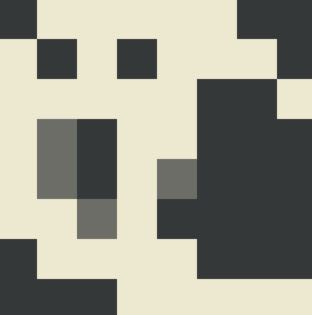
Almohada fantasmal
Busca sus costillas (Es la llave)
Un juego hecho en Bitsy
No tuviste que haber salido esa noche.
Jugar ahoraCómo jugar: haz clic dentro del juego y muévete con las flechas del teclado.
Me inspiré en una escena explícita de la novela EL VISITANTE del escritor Stephen King, donde empalan a un niño mientras pasiava por la noche con su perrita. El aspecto visual me inspire en creador candle. Desde el inicio no puedes ingresar a la cima del castillo porque te hace falta una llave (Tus costillas) al bajar a las catacumbas te encuentras 3 partes restantes de tu cuerpo y ítem trampa (Esto para hacer que busques en cada habitación de las catatumbas). Cada ítem te dirá como fuiste empalada, pero sin ser tan literal si no un poco poético. Por último, después conseguir tus costillas puedes ingresar a la cima donde te encontraras con tu perrita la cual estará agradecida de darte paz.
Hoy no puedo cantar, apenas ladro.
Si acaso limo el borde
Mugroso de mis uñas
O argumento -tan sólo-
Exhibiebdo la punta roma de un colmillo.
Me niego a batir la cola,
A saludar a los que vienen
Condecorados de calaveras
A ocupar el centro de la escena,
A terminar de ensuciar la sucia historia.
Aún me huelen a sangre.
Tengo olfato de perro, recuérdenlo.
Y no me engaña que se embadurnen de oros
Para aumentar su popularidad,
Como si se tratara de un desodorante extranjero.
Aún traen pegados los gritos
De los muertos matados.
Tengo oído de perro, recuérdenlo.
Y no me engaña que se hinquen
En las naves de los templos,
Ni que se ahorquen con corbatas de seda
En las carátulas de todas las revistas.
Aunque repten en un charco de pixeles los distingo,
Tengo ojos de perro, recuérdenlo.
Y no dejo de mirar
El fulgor de las lágrimas de sus víctimas,
Que vuelan como bombillos que revientan contra el suelo.
Sé que asustan los espejos al mirarlos,
Tengo alma de perro, recuérdenlo.
Sé que ríen en contubernio,
Que acumulan monedas rapadas,
Que suturan el país con agujas de olvido
Y contagian la enfermedad de su importancia.
Han dejado de gustarme los huesos,
Me he vuelto un feroz vegetariano.
Soy un poeta-perro, recuérdenlo.
Hoy no puedo cantar, apenas ladro.
Si acaso pulo esa sombra que no me deja.

Busca sus costillas (Es la llave)
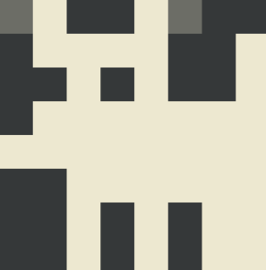
Te agradece por encontrar a su dueño.
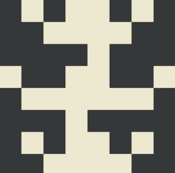
Al obtenerlo te dice: "Es una buena chica."
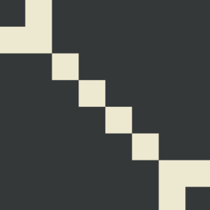
Al obtenerlo te dice: "Estaba paseando a Radar hasta que vi... vi..."
Al obtenerlo te dice: "Vi que tenía una erección mientras Radar pedía ayuda."
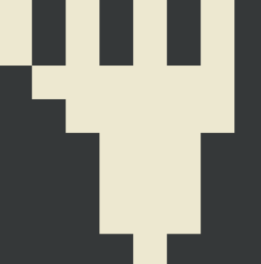
Al obtenerlo te dice: "No puedo sentir los dedos de los pies."
Al obtenerlo te dice: "Gracias por encontrarme, pero no soy la pieza que buscas."
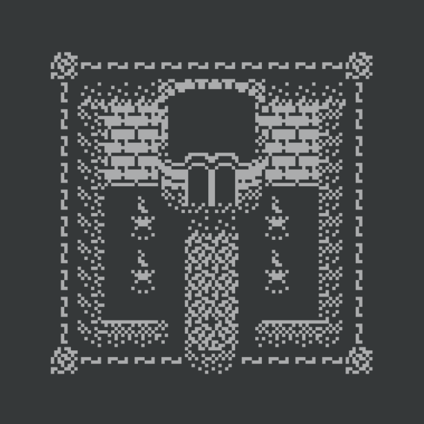
Sala de un castillo con cuatro fogatas y musgo en el piso y enfrente una puerta que abrir.
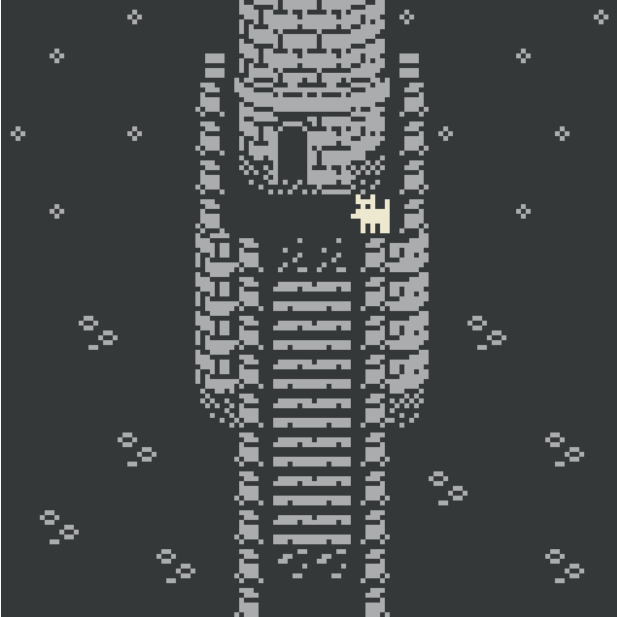
Puente para subir a la cima, gotas de agua y estrellas, una perrita y una entrada a la cima.
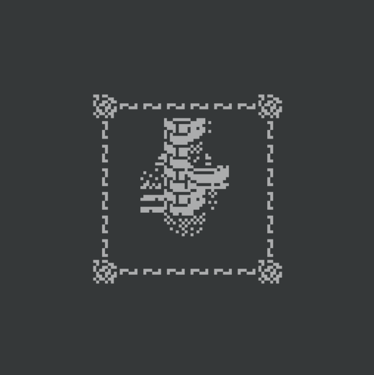
Escaleras para subir.
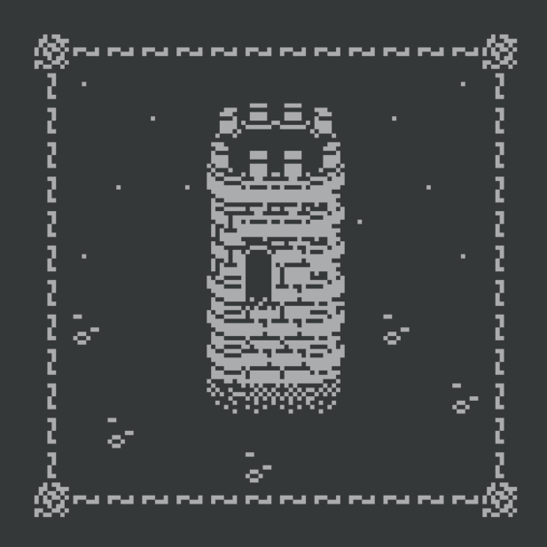
La cima de la torre con burbujas de agua y estrellas.
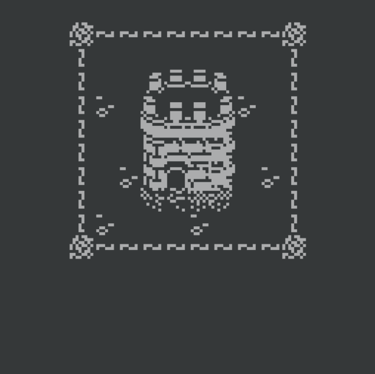
Cima de la torre con burbujar de agua (Siendo consumida por el mar)
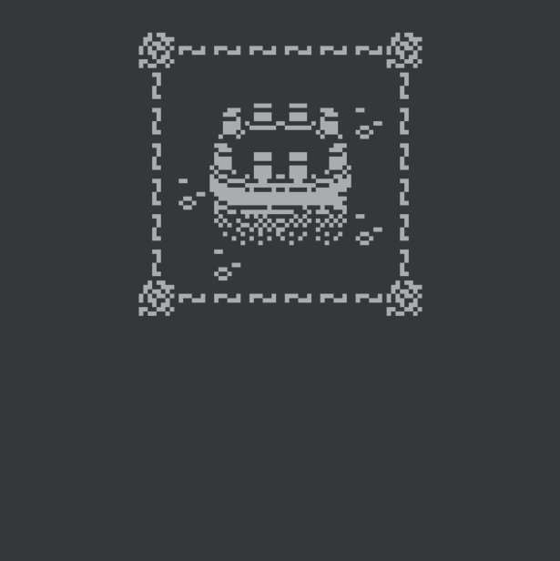
La cima de la torre consumada por el mar.
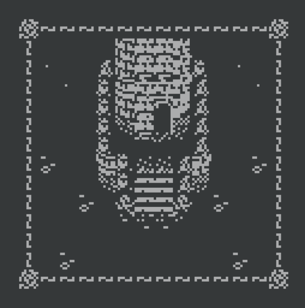
Los escalones para llegar a las catacumbas.
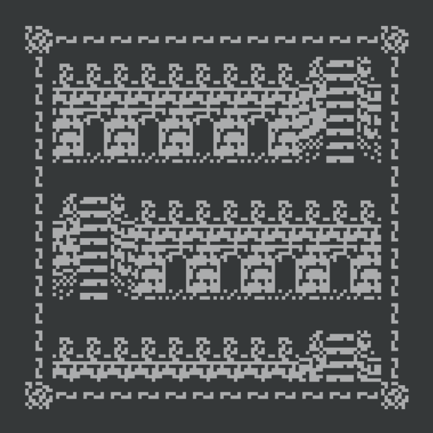
Catacumbas.
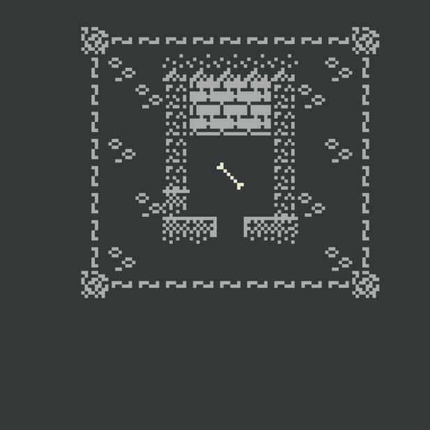
Sala con un hueso y burbujas.
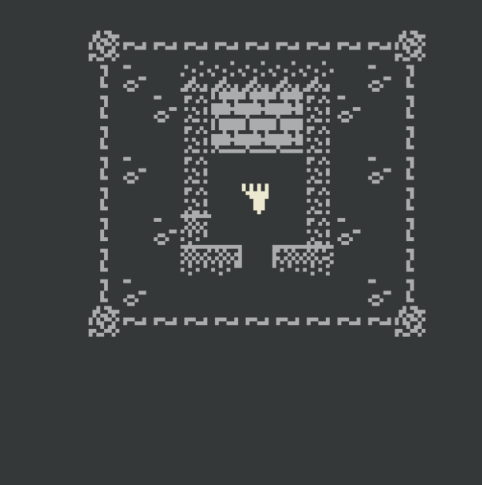
Sala con un pie y burbujas.
Sala Costilla y burbujas.
Sala Craneo y burbujas.
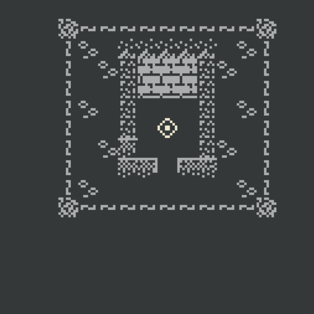
Sala con escritos y burbujas.